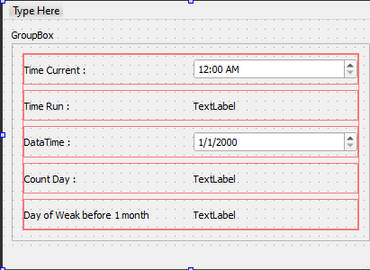
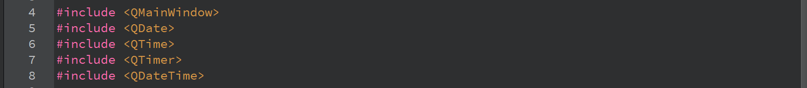
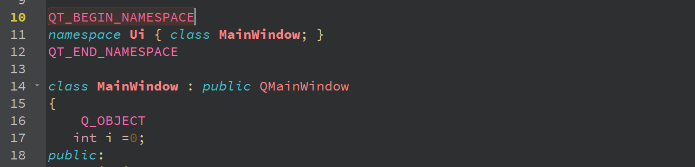
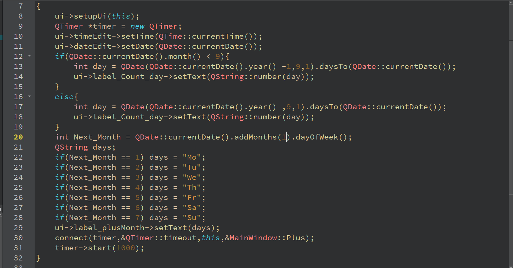
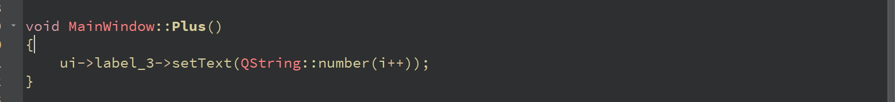

Phát triển một ứng dụng, dạng của ứng dụng được hiển thị trong hình.
1.Khi khởi động ứng dụng, hãy nhớ thời gian bắt đầu và hiển thị nó trong QTimeEdit
2.Khởi động bộ hẹn giờ với khoảng thời gian là 1 giây và dựa trên sự kiện bộ hẹn giờ, hiển thị trong QLabel số giây chương trình đang chạy.
3.Xuất ra QDateEdit ngày hôm nay.
4.Đếm số ngày đã trôi qua kể từ đầu học kỳ và hiển thị số này trong QLabel
5.Xác định ngày trong tuần của tháng tiếp theo và xuất nó ra QLabel
Video hướng dẫn:
Thư viện cần khai báo:
Ở mainwindow.h tạo một biến i để tính thời gian bắt đầu chạy chương trình:
Code yêu cầu đề ra:
Hàm Plus:
Chúc các bạn thành công.Có thắc mác gì thì có thể gửi Email hoặc Facebook cho mình.